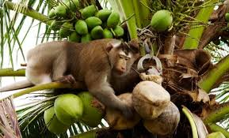
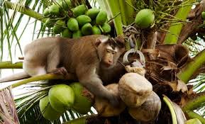

Urban Challenges in Dambulla
Dambulla is growing rapidly, but faces unique local issues that impact both daily life and urban sustainability:
-
Wildlife Conflicts – Monkeys: Monkeys have become a persistent urban nuisance in Dambulla, especially in residential neighborhoods and areas surrounding religious sites. They frequently enter homes, markets, and schools in search of food, often causing property damage by tearing roof tiles, raiding kitchens, and disrupting electrical wiring. Their bold behavior poses risks to children and the elderly, and improper disposal of organic waste only worsens the situation by encouraging repeat visits. As urban development continues to encroach on natural habitats, the human-monkey conflict in Dambulla is escalating and demands immediate, humane mitigation strategies.
 

- Elephant Intrusions:The time has seen many wild elephants in and about the Dambulla Economic Center area as they search through unprotected piles of refuse. The public disposal of offal from fruits, vegetables, and other organic wastes keeps enticing the animals into urban areas. This raises serious concerns for vendors and shoppers, thereby obstructing normal business activities and setting the stage for human-elephant conflicts. Further, it is even dangerous for the elephants, as they may ingest plastic-contaminated garbage. Such poisoning leads to their health deterioration and eventual ecological imbalance. This is a stark reminder of how dire the need is for sane waste containment and wildlife management strategies.


- Waste Disposal Issues:One of the greatest needs in Dambulla is a modern waste management system to cater to the needs of an active market. The economic center of Dambulla functions as one of the busiest markets in the region. There is a generation of large amounts of organic and plastic waste on a daily basis from the handling of fruits and vegetables, yet no proper or organized schedule of collection is being maintained or segregation carried out. This, garbage is allowed to accumulate in open places, thereby attracting stray animals and creating heavy foul odors and contamination of water bodies when it rains. Such laxity affects the public health and hygiene image of Dambulla, creating an unpleasant scenario for Dambulla-as a cultural and economic center. This dearth of modern waste management infrastructure is an important clue indicating the urgency of smart bins, recycling programs, and stricter laws.


- Elephant Intrusions:The time has seen many wild elephants in and about the Dambulla Economic Center area as they search through unprotected piles of refuse. The public disposal of offal from fruits, vegetables, and other organic wastes keeps enticing the animals into urban areas. This raises serious concerns for vendors and shoppers, thereby obstructing normal business activities and setting the stage for human-elephant conflicts. Further, it is even dangerous for the elephants, as they may ingest plastic-contaminated garbage. Such poisoning leads to their health deterioration and eventual ecological imbalance. This is a stark reminder of how dire the need is for sane waste containment and wildlife management strategies.